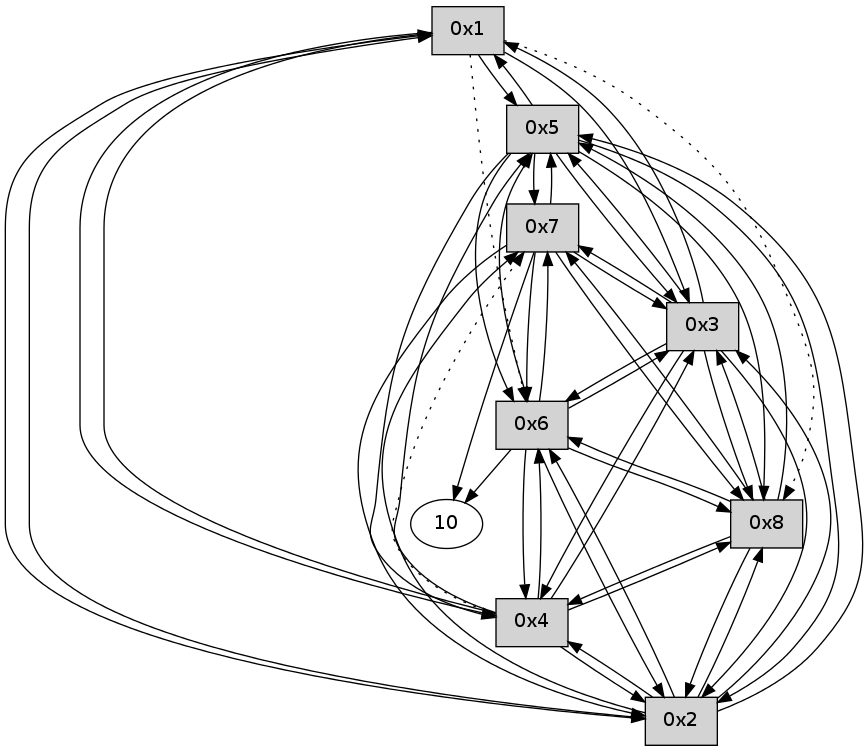

>> << IDX [start] -100 -25 -5 +0 +5 +25 +100 [185.334492922]
 Previous packets
180.001179 [Hello(7): seq=61 sym=10,5,6,8,3,2 sysInfo= stat=10:3,0,0,0/5:9,0,0,0/6:12,0,0,0/8:13,0,0,0/3:7,0,0,0/2:0,0,0,0]
180.062905 [Hello(6): seq=61 sym=10,7,5,3,8,4,2 sysInfo= stat=10:15,0,0,0/7:7,0,0,0/5:3,0,0,0/3:10,0,0,0/8:12,0,0,0/4:0,0,0,0/2:1,0,0,0]
----------------------------------------------------------------------
180.605669 beacon01(11f6) #0 coord=01,02,03,04,05,06,07,08,0a,09 cycle=688.0ms assoc
-- color-indic=0 64 06 e6
180.615829 beacon02(11f6) #0 coord=01,02,03,04,05,06,07,08,0a,09 cycle=688.0ms assoc 64 95 d7
180.625804 beacon03(11f6) #0 coord=01,02,03,04,05,06,07,08,0a,09 cycle=688.0ms assoc 64 ef 9a
180.635804 beacon04(11f6) #0 coord=01,02,03,04,05,06,07,08,0a,09 cycle=688.0ms assoc 64 98 70
180.645805 beacon05(11f6) #0 coord=01,02,03,04,05,06,07,08,0a,09 cycle=688.0ms assoc 64 e2 3d
180.655805 beacon06(11f6) #0 coord=01,02,03,04,05,06,07,08,0a,09 cycle=688.0ms assoc 64 6c ea
180.665805 beacon07(11f6) #0 coord=01,02,03,04,05,06,07,08,0a,09 cycle=688.0ms assoc 64 16 a7
180.675810 beacon08(11f6) #0 coord=01,02,03,04,05,06,07,08,0a,09 cycle=688.0ms assoc 64 93 36
180.728217 [Hello(1): seq=62 sym=5,3,2,4 asym=8,6 sysInfo= stat=5:11,0,0,0/3:13,0,0,0/2:7,0,0,0/4:10,0,0,0/8:12,0,0,0/6:13,0,0,0]
----------------------------------------------------------------------
181.393806 beacon01(11f6) #0 coord=01,02,03,04,05,06,07,08,0a,09 cycle=688.0ms assoc
-- color-indic=0 64 c2 e8
181.403984 beacon02(11f6) #0 coord=01,02,03,04,05,06,07,08,0a,09 cycle=688.0ms assoc 64 51 d9
181.413944 beacon03(11f6) #0 coord=01,02,03,04,05,06,07,08,0a,09 cycle=688.0ms assoc 64 2b 94
181.423941 beacon04(11f6) #0 coord=01,02,03,04,05,06,07,08,0a,09 cycle=688.0ms assoc 64 5c 7e
181.433941 beacon05(11f6) #0 coord=01,02,03,04,05,06,07,08,0a,09 cycle=688.0ms assoc 64 26 33
181.443942 beacon06(11f6) #0 coord=01,02,03,04,05,06,07,08,0a,09 cycle=688.0ms assoc 64 a8 e4
181.453942 beacon07(11f6) #0 coord=01,02,03,04,05,06,07,08,0a,09 cycle=688.0ms assoc 64 d2 a9
181.463947 beacon08(11f6) #0 coord=01,02,03,04,05,06,07,08,0a,09 cycle=688.0ms assoc 64 57 38
181.515744 [Hello(6): seq=62 sym=10,7,5,3,8,4,2 sysInfo= stat=10:15,0,0,0/7:7,0,0,0/5:3,0,0,0/3:10,0,0,0/8:12,0,0,0/4:0,0,0,0/2:1,0,0,0]
181.519150 [Hello(8): seq=62 sym=2,7,5,6,3,4 sysInfo= stat=2:2,0,0,0/7:7,0,0,0/5:9,0,0,0/6:13,0,0,0/3:8,0,0,0/4:9,0,0,0]
181.562792 [Hello(4): seq=62 sym=1,2,5,6,3,8 asym=7 sysInfo= stat=1:13,0,0,0/2:9,0,0,0/5:11,0,0,0/6:10,0,0,0/3:13,0,0,0/8:11,0,0,0/7:14,0,0,0]
181.577520 [Hello(2): seq=62 sym=1,7,5,3,8,4,6 sysInfo= stat=1:13,0,0,0/7:6,0,0,0/5:11,0,0,0/3:12,0,0,0/8:12,0,0,0/4:10,0,0,0/6:7,0,0,0]
181.601434 [Hello(7): seq=62 sym=10,5,6,8,3,2 sysInfo= stat=10:5,0,0,0/5:9,0,0,0/6:14,0,0,0/8:14,0,0,0/3:7,0,0,0/2:1,0,0,0]
181.618511 [Hello(5): seq=62 sym=1,2,7,6,3,8,4 sysInfo= stat=1:14,0,0,0/2:9,0,0,0/7:7,0,0,0/6:11,0,0,0/3:12,0,0,0/8:12,0,0,0/4:12,0,0,0]
181.647089 [Hello(3): seq=62 sym=1,2,7,5,6,8,4 sysInfo= stat=1:14,0,0,0/2:9,0,0,0/7:7,0,0,0/5:12,0,0,0/6:11,0,0,0/8:12,0,0,0/4:13,0,0,0]
----------------------------------------------------------------------
182.181943 beacon01(11f6) #0 coord=01,02,03,04,05,06,07,08,0a,09 cycle=688.0ms assoc
-- color-indic=0 64 7e ed
182.192101 beacon02(11f6) #0 coord=01,02,03,04,05,06,07,08,0a,09 cycle=688.0ms assoc 64 ed dc
182.202078 beacon03(11f6) #0 coord=01,02,03,04,05,06,07,08,0a,09 cycle=688.0ms assoc 64 97 91
182.212079 beacon04(11f6) #0 coord=01,02,03,04,05,06,07,08,0a,09 cycle=688.0ms assoc 64 e0 7b
182.222080 beacon05(11f6) #0 coord=01,02,03,04,05,06,07,08,0a,09 cycle=688.0ms assoc 64 9a 36
182.242079 beacon07(11f6) #0 coord=01,02,03,04,05,06,07,08,0a,09 cycle=688.0ms assoc 64 6e ac
182.252083 beacon08(11f6) #0 coord=01,02,03,04,05,06,07,08,0a,09 cycle=688.0ms assoc 64 eb 3d
182.325200 [Hello(1): seq=63 sym=5,3,2,4 asym=8,6 sysInfo= stat=5:12,0,0,0/3:14,0,0,0/2:8,0,0,0/4:11,0,0,0/8:13,0,0,0/6:14,0,0,0]
----------------------------------------------------------------------
182.970081 beacon01(11f6) #0 coord=01,02,03,04,05,06,07,08,0a,09 cycle=688.0ms assoc
-- color-indic=0 64 6a 83
182.980256 beacon02(11f6) #0 coord=01,02,03,04,05,06,07,08,0a,09 cycle=688.0ms assoc 64 f9 b2
182.990216 beacon03(11f6) #0 coord=01,02,03,04,05,06,07,08,0a,09 cycle=688.0ms assoc 64 83 ff
183.000218 beacon04(11f6) #0 coord=01,02,03,04,05,06,07,08,0a,09 cycle=688.0ms assoc 64 f4 15
183.010218 beacon05(11f6) #0 coord=01,02,03,04,05,06,07,08,0a,09 cycle=688.0ms assoc 64 8e 58
183.040220 beacon08(11f6) #0 coord=01,02,03,04,05,06,07,08,0a,09 cycle=688.0ms assoc 64 ff 53
183.095341 [Hello(8): seq=63 sym=2,7,5,6,3,4 sysInfo= stat=2:3,0,0,0/7:8,0,0,0/5:10,0,0,0/6:14,0,0,0/3:9,0,0,0/4:10,0,0,0]
183.113781 [Hello(5): seq=63 sym=1,2,7,6,3,8,4 sysInfo= stat=1:15,0,0,0/2:9,0,0,0/7:7,0,0,0/6:11,0,0,0/3:13,0,0,0/8:13,0,0,0/4:12,0,0,0]
183.150725 [Hello(3): seq=63 sym=1,2,7,5,6,8,4 sysInfo= stat=1:15,0,0,0/2:9,0,0,0/7:7,0,0,0/5:13,0,0,0/6:11,0,0,0/8:13,0,0,0/4:13,0,0,0]
183.155403 [Hello(4): seq=63 sym=1,2,5,6,3,8 asym=7 sysInfo= stat=1:14,0,0,0/2:10,0,0,0/5:13,0,0,0/6:10,0,0,0/3:14,0,0,0/8:12,0,0,0/7:15,0,0,0]
183.178417 [Hello(6): seq=63 sym=10,7,5,3,8,4,2 sysInfo= stat=10:0,0,0,0/7:9,0,0,0/5:5,0,0,0/3:11,0,0,0/8:14,0,0,0/4:2,0,0,0/2:2,0,0,0]
183.203839 [Hello(2): seq=63 sym=1,7,5,3,8,4,6 sysInfo= stat=1:14,0,0,0/7:7,0,0,0/5:13,0,0,0/3:14,0,0,0/8:13,0,0,0/4:11,0,0,0/6:7,0,0,0]
----------------------------------------------------------------------
183.758219 beacon01(11f6) #0 coord=01,02,03,04,05,06,07,08,0a,09 cycle=688.0ms assoc
-- color-indic=0 64 d6 86
183.768386 beacon02(11f6) #0 coord=01,02,03,04,05,06,07,08,0a,09 cycle=688.0ms assoc 64 45 b7
183.778354 beacon03(11f6) #0 coord=01,02,03,04,05,06,07,08,0a,09 cycle=688.0ms assoc 64 3f fa
183.788353 beacon04(11f6) #0 coord=01,02,03,04,05,06,07,08,0a,09 cycle=688.0ms assoc 64 48 10
183.798355 beacon05(11f6) #0 coord=01,02,03,04,05,06,07,08,0a,09 cycle=688.0ms assoc 64 32 5d
183.808354 beacon06(11f6) #0 coord=01,02,03,04,05,06,07,08,0a,09 cycle=688.0ms assoc 64 bc 8a
183.818356 beacon07(11f6) #0 coord=01,02,03,04,05,06,07,08,0a,09 cycle=688.0ms assoc 64 c6 c7
183.828359 beacon08(11f6) #0 coord=01,02,03,04,05,06,07,08,0a,09 cycle=688.0ms assoc 64 43 56
183.866124 [Hello(1): seq=64 sym=5,3,2,4 asym=8,6 sysInfo= stat=5:13,0,0,0/3:15,0,0,0/2:9,0,0,0/4:12,0,0,0/8:14,0,0,0/6:15,0,0,0]
----------------------------------------------------------------------
184.546355 beacon01(11f6) #0 coord=01,02,03,04,05,06,07,08,0a,09 cycle=688.0ms assoc
-- color-indic=0 64 12 88
184.556516 beacon02(11f6) #0 coord=01,02,03,04,05,06,07,08,0a,09 cycle=688.0ms assoc 64 81 b9
184.566489 beacon03(11f6) #0 coord=01,02,03,04,05,06,07,08,0a,09 cycle=688.0ms assoc 64 fb f4
184.576490 beacon04(11f6) #0 coord=01,02,03,04,05,06,07,08,0a,09 cycle=688.0ms assoc 64 8c 1e
184.586490 beacon05(11f6) #0 coord=01,02,03,04,05,06,07,08,0a,09 cycle=688.0ms assoc 64 f6 53
184.596491 beacon06(11f6) #0 coord=01,02,03,04,05,06,07,08,0a,09 cycle=688.0ms assoc 64 78 84
184.606491 beacon07(11f6) #0 coord=01,02,03,04,05,06,07,08,0a,09 cycle=688.0ms assoc 64 02 c9
184.616495 beacon08(11f6) #0 coord=01,02,03,04,05,06,07,08,0a,09 cycle=688.0ms assoc 64 87 58
184.662725 [Hello(3): seq=64 sym=1,2,7,5,6,8,4 sysInfo= stat=1:0,0,0,0/2:10,0,0,0/7:7,0,0,0/5:13,0,0,0/6:12,0,0,0/8:13,0,0,0/4:14,0,0,0]
184.672669 [Hello(8): seq=64 sym=2,7,5,6,3,4 sysInfo= stat=2:4,0,0,0/7:9,0,0,0/5:11,0,0,0/6:15,0,0,0/3:10,0,0,0/4:11,0,0,0]
184.718340 [Hello(4): seq=64 sym=1,2,5,6,3,8 asym=7 sysInfo= stat=1:15,0,0,0/2:11,0,0,0/5:13,0,0,0/6:11,0,0,0/3:0,0,0,0/8:13,0,0,0/7:15,0,0,0]
184.722452 [Hello(5): seq=64 sym=1,2,7,6,3,8,4 sysInfo= stat=1:0,0,0,0/2:10,0,0,0/7:7,0,0,0/6:12,0,0,0/3:15,0,0,0/8:14,0,0,0/4:13,0,0,0]
184.739637 [Hello(7): seq=64 sym=10,5,6,8,3,2 sysInfo= stat=10:6,0,0,0/5:11,0,0,0/6:0,0,0,0/8:0,0,0,0/3:8,0,0,0/2:2,0,0,0]
184.744397 [Hello(2): seq=64 sym=1,7,5,3,8,4,6 sysInfo= stat=1:15,0,0,0/7:8,0,0,0/5:13,0,0,0/3:15,0,0,0/8:14,0,0,0/4:12,0,0,0/6:7,0,0,0]